Component Selection
Overview
The following are the components I have selected for my subsystem and the reason as to why I chose them.
Motor
| Solution | Pros | Cons |
|---|---|---|
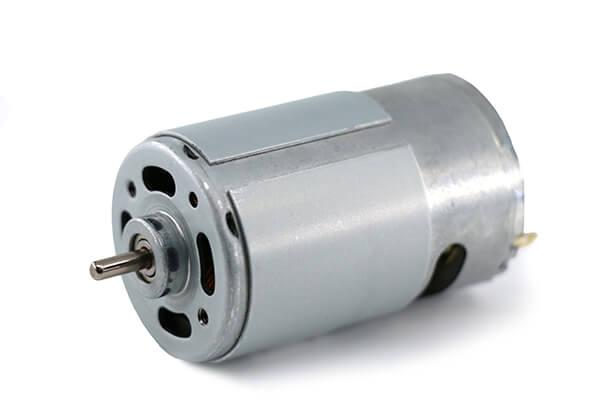 Option 133JPF-15380-50 12V DC Motor $20/each Link to Product |
High torque for its size. controlled speed output. Simple 2-wire DC operation. I already have this. Metal gearbox. |
Noise. Limited lifespan under heavy load. low precision. |
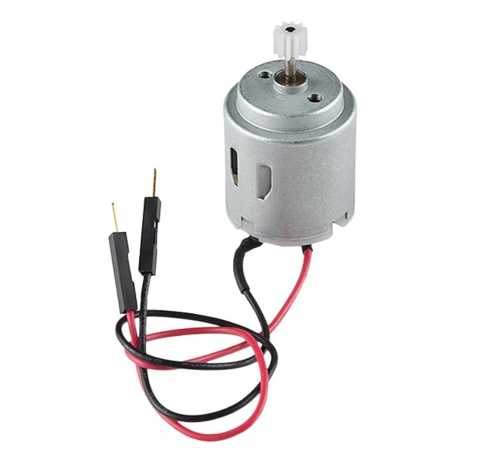 Option 2ROB-11696 STANDARD MOTOR 12V $2.75/each Link to Product |
Very low cost Good no-load speed Compact High availability |
Limited torque/power No speed control Noise, brush wear, and maintenance. |
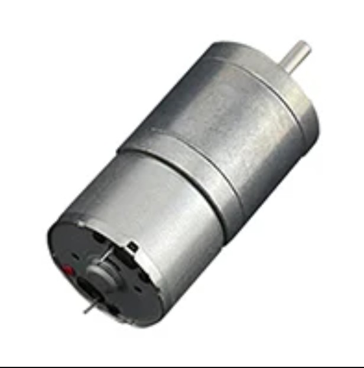 Option 3 FIT0495-A 6V DC Motor $10/each Link To Product |
Simple and straightforward to use. High torque. Compact size Decent Voltage Range |
Very slow output speed Limited to low-to-moderate workloads. Low operating voltage. |
{kind=link}
{kind=link}
{kind=link}
Choice: 33JPF-15380-50 12V DC Motor
Rationale: This motor was chosen because it provides good torque for its size, lets us control the speed easily, and only needs a simple 2-wire connection. It also works well with the mechanical load of my design. Since I already own this motor, we avoid extra cost and shipping delays. The downsides such as some gearbox noise, lower precision, and shorter life under heavy use are acceptable because our project does not need high accuracy or long-term continuous operation.
H-Bridge
| Solution | Pros | Cons |
|---|---|---|
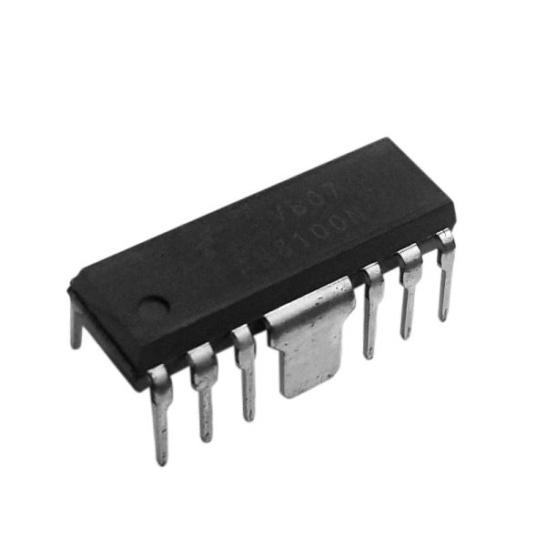 Option 1FAN8100N $1.16/each Link to Product |
Simplicity, easy to use I already own one Cheap |
No longer manufactured Lacks advanced features |
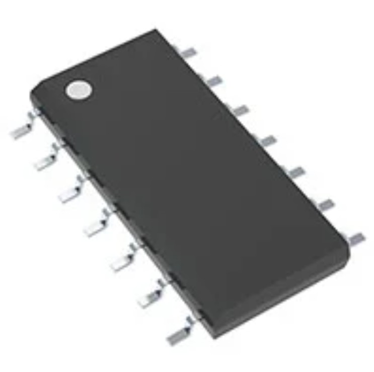 Option 2NCV7703CD2R2G $2.40/each Link to Product |
Flexible motor/bridge control Protection features built-in. Cost-effective Widely available. |
Limited continuous current capability. Potential complexity in firmware/hardware integration. |
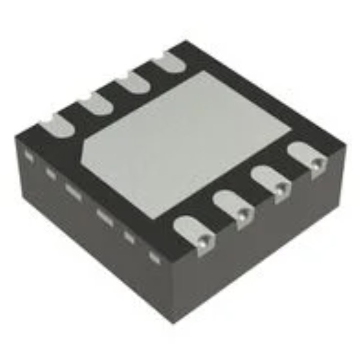 Option 3DRV8220DSGR $0.88/each Link to Product |
Good output current for small / medium motors. Low-power sleep mode. Compact. Wide voltage range. |
Not for heavy-duty Incompatible with PCB Thermal / power dissipation constraints. |
{kind=link}
{kind=link}
{kind=link}
Choice: FAN8100N
Rationale: I chose the FAN8100N driver because it is simple to use, fits easily into my circuit, and I already have it available. This saves time and avoids buying new parts. Although it lacks advanced features and may be older hardware, it is still suitable because the motor only needs basic control (on/off and forward/reverse). Long-term durability or advanced functions are not important for this project.
Voltage Regulator
| Solution | Pros | Cons |
|---|---|---|
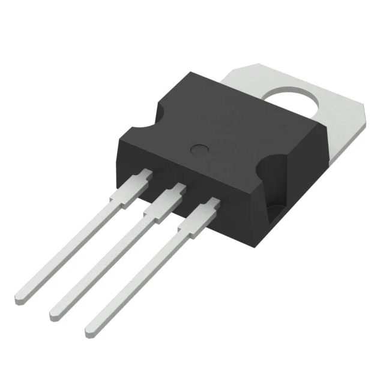 Option 1LM7805 $0.55/each Link to Product |
Simplicity, easy to use I already own one Reliable |
High dropout voltage Gets hot |
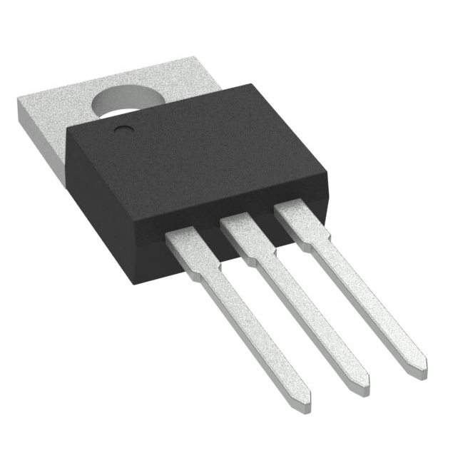 Option 2UA7805CKCS $1.34/each Link to Product |
Can handle higher current Very reliable design Good performance under heavy loads |
Also has a high dropout Can create heat if input voltage is much higher than 5V. |
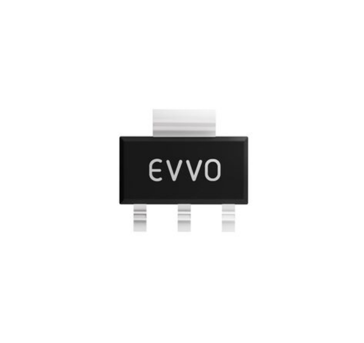 Option 3AMS1117-5.0 $0.12/each Link to Product |
Lower dropout (about 1.1V) Very cheap Compact |
Can only handle about 1A of current Runs hot at high load TNot as robust as the 7805 |
{kind=link}
{kind=link}
{kind=link}
Choice: LM7805
Rationale: I chose the LM7805 because it is easy to use, reliable, and I already have one available. It provides a steady 5V output and works well for simple circuits like this project. Even though it has a higher dropout voltage and can get warm, the current needs of this project are so that it will still work fine.
External Power Supply
| Solution | Pros | Cons |
|---|---|---|
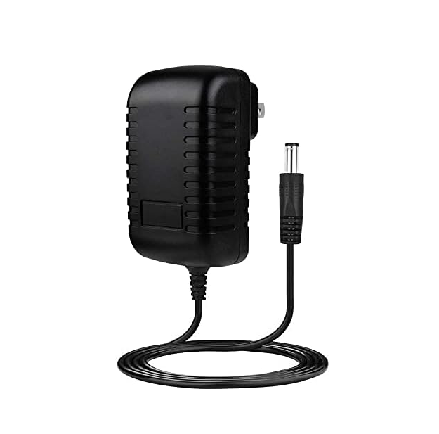 Option 1BestCH 9V 3.0A AC Adapter $4.52/each Link to Product |
Reliable Automatic overload cut off No voltage fluctuations |
Higher heat output Cannot handle high voltage |
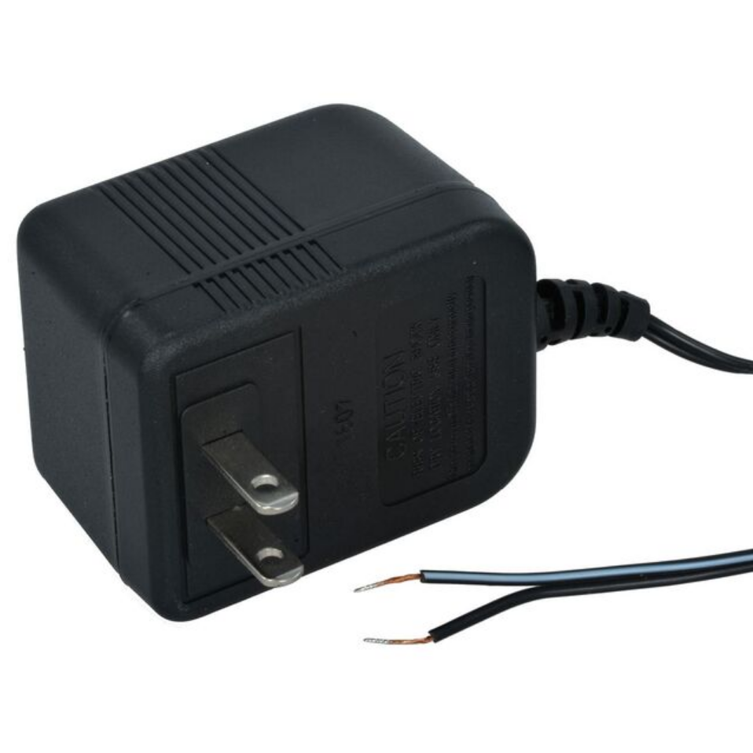 Option 2DCU120050D4740 12V power supply $7.65/each Link to Product |
Compact Consistent voltage supply Cost-effective Widely available. |
Unregulated current output Low output current |
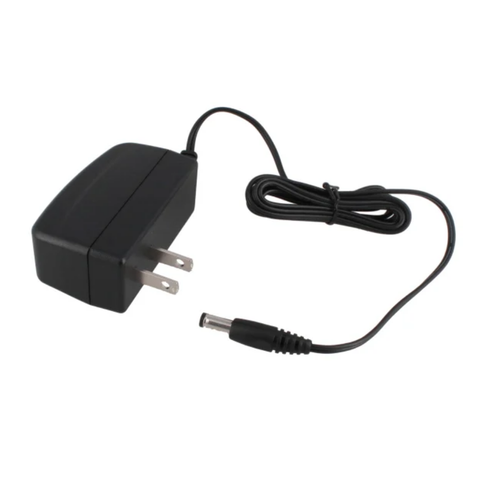 Option 3WR9HD1333CCP-F(R6B) 9V Power Supply $6.23/each Link to Product |
Wide input voltage range Sufficient voltage for small circuits Efficient |
Polarity & Connector Compatibility Voltage Stability / Headroom Limitations |
{kind=link}
{kind=link}
{kind=link}
Choice: BestCH 9V 3.0A AC Adapter
Rationale: This power supply gives a steady, reliable output and includes overload protection to keep your electronics safe. It powers on smoothly, helping avoid sudden voltage spikes that could harm your circuits or cause weird startup problems. Overall, it’s a dependable and easy-to-use option with helpful safety features.
Final Component Selection Summary
| Component | Part Number | Function | Rationale |
|---|---|---|---|
| Motor | 33JPF-15380-50 | Moves the lid open and closed when it receives power from the motor driver | This motor was chosen because it has enough torque, is easy to control, and fits the design without extra cost |
| H-Bridge | FAN8100N | Controls the direction and speed of the motor so it can open or close the lid on command | I chose this because it is simple, already available, and provides the basic forward and reverse control the motor needs |
| Voltage Regulator | LM7805 | To ensure that only 5V of power runs through the circuit | I chose the LM7805 because it is reliable, easy to use, and already available. It gives a steady 5 voltage output |
| Power Supply | BestCH/EA10302 | Provides 9V power to the circuit | This power supply gives a steady, reliable output with built in overload protection. It starts up smoothly and helps prevent voltage spikes, making it a safe and dependable choice for the circuit |
MCC Configuration
| Component | Pin | Pin Type | Direction | Purpose |
|---|---|---|---|---|
| H-Bridge (REV/FWD) | RD2/RD3 | Digital | Output | tell the H bridge which way the motor should turn |
| Ribbon Connector | RF6 | Digital | Input | brings signals from the IR subsystem into the PIC so the motor can respond when the lid should open or close |
| Button | RF4 | Digital | Input | lets you manually trigger functions or test the system |
| LED | RC7 | Digital | Output | shows simple status or test signals |